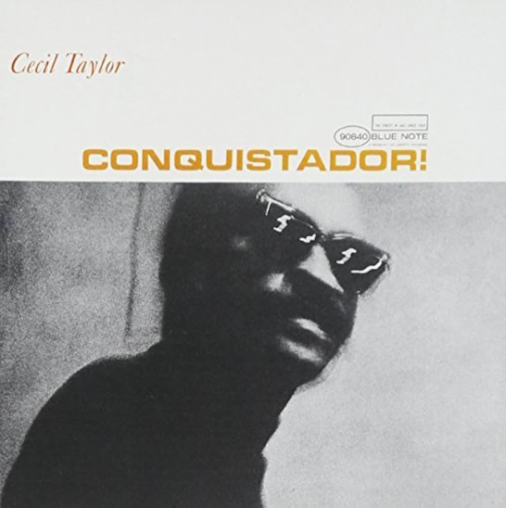

Unit Structures


Pubblicato a ottobre 1966. Registrato il 19 maggio 1966.
Cliccare sulle immagini per ascoltare!
Pubblicato a ottobre 1966. Registrato il 19 maggio 1966.


Pubblicato a marzo 1968. Registrato il 6 ottobre 1966.